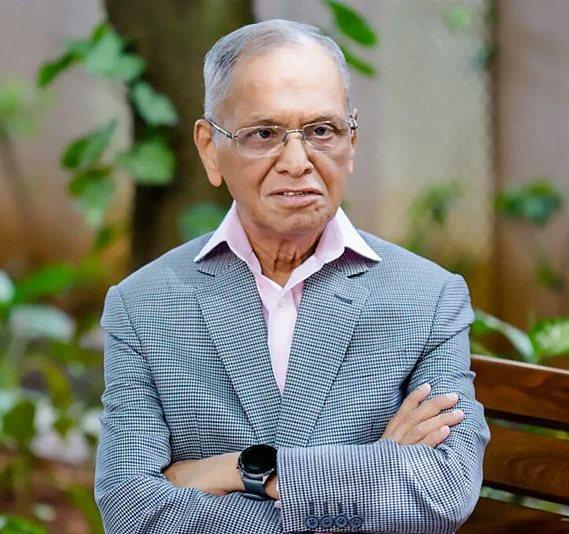
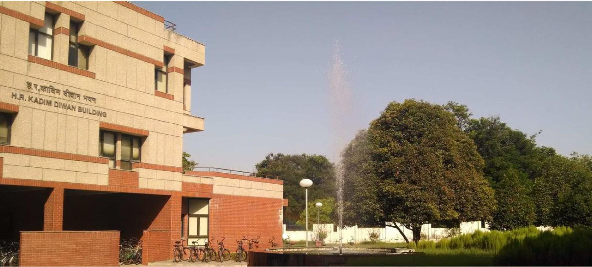
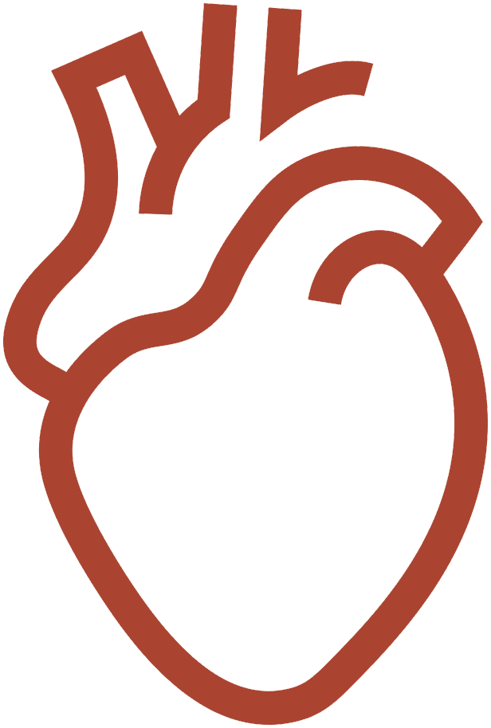

Building a Home for Computer Science
H. R. Kadim Diwan Building
From creating a dedicated home for Computer Science and Engineering to supporting faculty, research and emerging healthcare innovation, N. R. Narayana Murthy’s sustained giving has strengthened IIT Kanpur across generations.
When N. R. Narayana Murthy arrived at IIT Kanpur in the late 1960s, computing in India was still an emerging discipline.
His exposure to computer science at the Institute helped shape the direction of his professional life. Decades later, he returned to IIT Kanpur with a commitment that would extend far beyond a single gift—supporting the spaces, people and ideas through which academic institutions build lasting excellence.
The most visible expression of this relationship is the H. R. Kadim Diwan Building, the dedicated home of IIT Kanpur’s Department of Computer Science and Engineering.

Creating a Home for a Growing Discipline
By the late 1990s, the Department of Computer Science and Engineering had grown considerably in academic stature, research activity and student strength. Its expanding ambitions required an environment designed around the needs of a rapidly evolving discipline.
Murthy’s support enabled the creation of a new departmental building that brought laboratories, classrooms, faculty offices and collaborative spaces together within one academic home.
He chose not to have the building named after himself; instead, it honours his father-in-law, H. R. Kadim Diwan, who had devoted his life to teaching.
The building provided more than additional infrastructure. It gave the Department a distinct centre of intellectual life—one capable of supporting deeper interaction among students, faculty and researchers as computing began transforming industries and societies around the world.

A Commitment Beyond Infrastructure
While the Diwan Building remains the physical centre of this story, Murthy’s support for IIT Kanpur has consistently extended beyond infrastructure.
The N. Rama Rao Chair, established in memory of his father, supports academic distinction in Computer Science and Engineering. The Research-I Foundation was created to strengthen the Department’s research environment through support for faculty, students, visiting scholars and international academic engagement.
His contributions have also enabled initiation grants for newly appointed CSE faculty, Infosys Fellowships and corpus support for academic departments and interdisciplinary programmes across the Institute.
Each initiative responds to a different institutional need: helping a young faculty member begin ambitious research, enabling doctoral talent to develop, strengthening academic programmes and creating opportunities for IIT Kanpur’s scholars to participate in global research communities.
More recently, this legacy has expanded into healthcare through the Narayana Murthy Initiative for the Gangwal School of Medical Sciences and Technology, supporting the proposed Centre of Excellence for cardiovascular and pulmonary diseases.
The disciplines may be different, but the underlying philosophy remains consistent—exceptional people require strong institutions, sustained resources and the freedom to pursue consequential ideas.

Giving That Strengthens an Institution
A building is often the most visible form of philanthropy. Its deeper value lies in the work it makes possible.
The H. R. Kadim Diwan Building created a home for one of IIT Kanpur’s most influential departments. The chairs, fellowships, faculty grants and research support surrounding it strengthened the human and intellectual capacity required to sustain excellence within that home.
Together, these contributions represent a long-term investment in institutional capability rather than a response to one immediate requirement.
They have supported IIT Kanpur at multiple levels—from physical infrastructure and faculty development to interdisciplinary programmes and new frontiers of medical research.
The building makes this legacy visible. The generations of teaching, discovery and innovation enabled through it make the legacy endure.